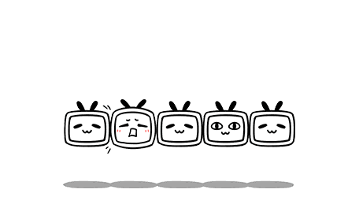

近期，准备通过机器学习来进行恶意代码的分检，需要学习相关知识，故做了一些机器学习的笔记。
首先明确了这是一个典型的二分类问题，分为Malicious(恶意)和Benign(良性)两类。通过分类算法对选取的特征向量进行训练测试，实现对恶意软件和良性软件的区分。
机器学习——分类问题
KNN K近邻算法
一般步骤：
计算距离
欧式距离
选取近邻
按距离升序，选K个样本点
分类决策
根据K个近邻归属类别，采用多数表决，由K个点来投票决定测试对象归为哪一类
关于K的取值
将很大程度影响到准确率。
实例分析
step1
准备数据，分析数据，预处理
step2
划分训练集和测试集
step3
计算未知样本和训练集样本的距离
step4
选取K值
step5
多数表决
电影分类问题(简单问题)
数据集

FIGHT（打斗次数） KISS（接吻次数） Label（类型） 3 104 R 2 100 R 1 81 R 101 10 A 99 5 A 98 2 A 18 90 ? 绘制特征向量关系图，以便观察。
More …
约会网站配对数据
稍复杂的数据集
三个特征值
出行里程
娱乐时间占比
每周吃冰激凌数量
部分数据展示，共1000行数据。
好感度作为Label；
Mileage(里程数) Entertainment(娱乐) ICE Cream(冰激凌) Impression（感官） 40920 8.326976 0.953952 LargeDoses 14488 7.153469 0.805124 SmallDoses 26052 1.441871 0.428964 DidntLike … … … … 根据特征向量关系绘图
归一化
欧式距离：d(x,y)=(x1−y1)2+(x2−y2)2+…+(x**n−y**n)2=i=1∑n(x**i−y**i)2
0-1标准化
为了数据处理方便提出来的，把数据映射到0～1范围之内处理
公式：x’ = (x - X_min) / (X_max - X_min)
2
3
4
5
6
7
[1.4488000e+04 7.1534690e+00 1.6739040e+00]
[2.6052000e+04 1.4418710e+00 8.0512400e-01]
...
[2.6575000e+04 1.0650102e+01 8.6662700e-01]
[4.8111000e+04 9.1345280e+00 7.2804500e-01]
[4.3757000e+04 7.8826010e+00 1.3324460e+00]]
2
3
4
5
6
7
[0.15873259 0.34195467 0.98724416]
[0.28542943 0.06892523 0.47449629]
...
[0.29115949 0.50910294 0.51079493]
[0.52711097 0.43665451 0.4290048 ]
[0.47940793 0.3768091 0.78571804]]不同特征数量级一致，权重降低，线性变化，位序不会发生变化。
Z-score标准化
sigmoid压缩法
继续处理这个问题
划分训练集和测试集
先获取总规模，按一定百分比取训练集规模
2
3
4
dataSize = normalSet.shape[0]
trainSize = int(m*dataSize)
testSize = int((1-m)*dataSize)KNN算法
取K = 5；
数据集总行数 1000
错误率 : 0.05527638190954774K = 6;
错误率 : 0.06030150753768844
…
划分比例（训练：测试） K 准确率 8：2 5 99.45% 8：2 6 99.44% 7：3 6 99.96% 6：4 6 99.96%
敏感权限
算法
权限特征
理论研究
通过反编译、解压缩等多种途径即可获得应用程序的权限信息，再利用系统权限的调用能够间接反映出应用程序行为特征的特性，将系统权限申请与恶意应用的行为对应上，达到分类的目标和效果。
KNN
Details
Pandas
iloc
根据数字型的行/列标签来索引数据
2
Y = testData.iloc[:2000,:88]K值
500
K P 500 99.82400 100 99.82400 2000 99.82400 欧式距离情况下，K个label全都是0
随机森林
决策树
决策树是一种有监督的机器学习算法，该方法可以用于解决分类和回归问题。决策树可以简单地理解为达到某一特定结果的一系列决策。
- n_estimators : integer, optional (default=10) 整数，可选择(默认值为10)。
The number of trees in the forest.
森林里（决策）树的数目。
显示算法，没有训练，而是作比较。